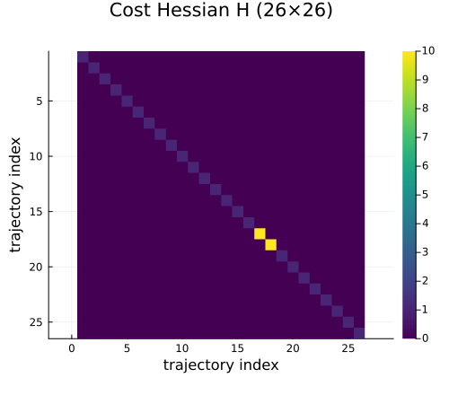
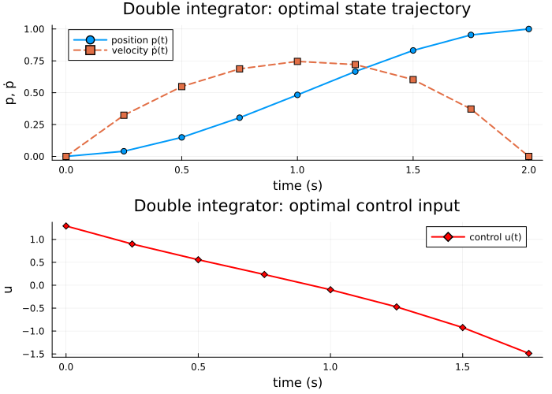
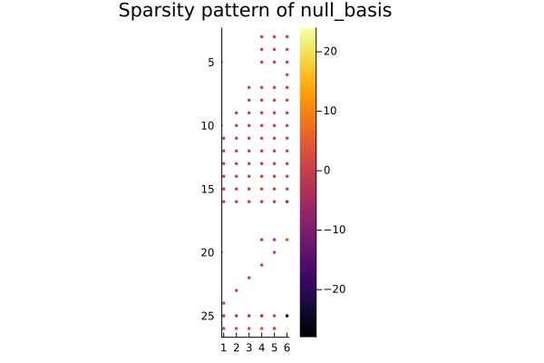
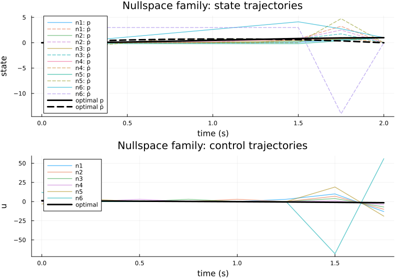

Controlled Trajectory Examples: 1 — Double Integrator
This is the first example in a four-part progression of controlled-trajectory benchmarks built with CellularSheaves.jl:
- Double integrator (this page) — the canonical first LQR system.
- Vehicle platoon — same control story in a multi-agent / path-graph setting.
- Planar quadrotor — a more realistic multi-input robotic system.
- Mass-spring-damper chain — graph-coupled mechanical system bridging toward later consensus and network examples.
Each example follows the same conceptual pipeline:
\[(A_c, B_c) \;\longrightarrow\; (A_d, B_d) \;\longrightarrow\; \mathcal{T}(x_1, x_{k+1}) \;\longrightarrow\; \min_{z \in \mathcal{T}(x_1, x_{k+1})} J(z).\]
Physical system
A unit point mass moves along a line. The state is position and velocity; the control input is acceleration:
\[x = \begin{bmatrix} p \\ \dot{p} \end{bmatrix}, \qquad u = a, \qquad A_c = \begin{bmatrix} 0 & 1 \\ 0 & 0 \end{bmatrix}, \qquad B_c = \begin{bmatrix} 0 \\ 1 \end{bmatrix}.\]
Despite its simplicity this system exhibits every feature of the controlled-trajectory workflow and serves as the natural reference point for the rest of the progression.
References:
- Anderson, B. D. O. & Moore, J. B. (1990). Optimal Control: Linear Quadratic Methods. Prentice-Hall.
- Lewis, F. L., Vrabie, D. L., & Syrmos, V. L. (2012). Optimal Control, 3rd ed. John Wiley & Sons. ISBN 978-0-470-63349-6.
using CellularSheaves
using LinearAlgebra
using BlockArrays
using Plots
using SparseArrays
using CellularSheaves.TrajectorySheavesImport the API extension that provides nullspace_trajectory_family.
using CellularSheaves.TrajectorySheaves: nullspace_trajectory_familyStep 1: Define the continuous-time model
The double integrator in standard state-space form.
Ac = [0.0 1.0;
0.0 0.0]
Bc = reshape([0.0, 1.0], 2, 1)2×1 Matrix{Float64}:
0.0
1.0Step 2: Discretize with zero-order hold
A ControlledTrajectorySheaf wraps the ZOH discretization $x_{t+1} = A_d x_t + B_d u_t$ as a path-graph sheaf. Its global sections are exactly the feasible sampled state-control trajectories.
h = 0.25 # sample period (seconds)
k = 8 # number of time steps
F = EuclideanSheaf{Float64}(fill(2, 1)) # base sheaf: one vertex, 2D stalk
ts = ControlledTrajectorySheaf(F, Ac, Bc, h, k)
println("State dimension n = ", ts.state_dim)
println("Control dimension m = ", ts.control_dim)
println("Steps k = ", ts.k)State dimension n = 2
Control dimension m = 1
Steps k = 8Step 3: Fix endpoint states
We start at rest and aim to reach a target position with zero velocity.
x1 = [0.0, 0.0] # initial state: position 0, velocity 0
xk1 = [1.0, 0.0] # terminal state: position 1, velocity 02-element Vector{Float64}:
1.0
0.0Step 4: Build the feasible trajectory affine space
feasible_control_trajectory_basis returns:
z_p— a particular feasible trajectory (the harmonic extension of the boundary data);N— columns spanning all endpoint-preserving perturbations.
Any feasible trajectory satisfies $z = z_p + N \alpha$ for some $\alpha \in \mathbb{R}^r$.
z_p_raw, N = feasible_control_trajectory_basis(ts, x1, xk1)
n = ts.state_dim
m = ts.control_dim
r = size(N, 2)
println("Trajectory dimension p = ", (k+1)*n + k*m)
println("Free parameters r = ", r)Trajectory dimension p = 26
Free parameters r = 6Step 5: Assemble the LQR objective
We minimize the quadratic running cost
\[J(z) = \tfrac{1}{2} \sum_{t=1}^{k} \bigl( x_t^\top Q\, x_t + u_t^\top R_u\, u_t \bigr) + \tfrac{1}{2}\, x_{k+1}^\top Q_f\, x_{k+1}.\]
The assembled cost Hessian $H$ is block-diagonal: $k$ copies of $Q$ on the running state blocks, $Q_f$ on the terminal block, and $k$ copies of $R_u$ on the control blocks.
Q = Matrix{Float64}(I, n, n)
Ru = Matrix{Float64}(I, m, m)
Qf = 10.0 * Matrix{Float64}(I, n, n) # heavier terminal penalty
H, f, _ = lqr_objective(ts, Q, Ru; Qf=Qf)(sparse([1, 2, 3, 4, 5, 6, 7, 8, 9, 10 … 17, 18, 19, 20, 21, 22, 23, 24, 25, 26], [1, 2, 3, 4, 5, 6, 7, 8, 9, 10 … 17, 18, 19, 20, 21, 22, 23, 24, 25, 26], [1.0, 1.0, 1.0, 1.0, 1.0, 1.0, 1.0, 1.0, 1.0, 1.0 … 10.0, 10.0, 1.0, 1.0, 1.0, 1.0, 1.0, 1.0, 1.0, 1.0], 26, 26), [-0.0, -0.0, -0.0, -0.0, -0.0, -0.0, -0.0, -0.0, -0.0, -0.0 … -0.0, -0.0, -0.0, -0.0, -0.0, -0.0, -0.0, -0.0, -0.0, -0.0], 0.0)Rows/columns are ordered: [x₁, x₂, …, x{k+1}, u₁, …, uk]. The state blocks (left upper) carry Q and Qf; the control blocks (lower right) carry Ru.
p_H = heatmap(Matrix(H);
color=:viridis, colorbar=true,
title="Cost Hessian H ($(size(H,1))×$(size(H,2)))",
xlabel="trajectory index", ylabel="trajectory index",
yflip=true, aspect_ratio=:equal, size=(500, 450))
p_H
Step 6: Solve for the optimal feasible trajectory
optimal_control_trajectory restricts the quadratic objective to the feasible affine space and solves the reduced quadratic programme
\[\min_{\alpha} \tfrac{1}{2}\, \alpha^\top (N^\top H N)\, \alpha + \alpha^\top N^\top (H z_p + f).\]
z_opt, α_opt, z_p_block, null_basis =
optimal_control_trajectory(ts, x1, xk1, H, f)([0.0, 0.0, 0.040399563957540505, 0.32319651166032237, 0.1493067616029364, 0.5480610695028436, 0.3037100987563263, 0.6871656277242746, 0.48281393059584965, 0.7456650269919112 … 1.0, 0.0, 1.2927860466412895, 0.899458231370085, 0.5564182328857243, 0.23399759707054626, -0.09837706484501971, -0.4728056006466194, -0.923590871592058, -1.4878865708839477], [-0.4728056006466194, -0.09837706484501971, 0.23399759707054626, 0.5564182328857243, 0.899458231370085, 0.5480610695028436], [0.0, 0.0, -2.305338143431522e-31, -4.1600086798764305e-32, -3.518674008395481e-31, 0.0, -4.6280096563625295e-31, -2.2204460492503146e-16, -5.551115123125844e-17, -4.440892098500629e-16 … 1.0, 0.0, -1.6640034719505722e-31, 0.0, 0.0, 0.0, 0.0, 0.0, 16.00000000000001, -16.000000000000007], [0.0 0.0 … 0.0 0.0; 0.0 0.0 … 0.0 0.0; … ; -2.000000000000004 -3.0000000000000053 … 1.0 -28.000000000000036; 1.0000000000000036 2.0000000000000044 … -0.9999999999999998 24.00000000000003])Verify first-order optimality: the reduced gradient should vanish at α*.
Rred = null_basis' * H * null_basis
rred = null_basis' * (H * Array(z_p_block) + f)
println("Optimality residual ‖Rred α* + rred‖ = ", norm(Rred * α_opt + rred))Optimality residual ‖Rred α* + rred‖ = 1.156679772130055e-13Verify that z_opt lies in the feasible affine space.
println("Affine-space error ‖z_opt − (z_p + N α*)‖ = ",
norm(Array(z_opt) - (Array(z_p_block) + null_basis * α_opt)))Affine-space error ‖z_opt − (z_p + N α*)‖ = 0.0Step 7: Plot only the optimal trajectory (reference view)
State blocks: z_opt[Block(t)] for t = 1, …, k+1. Control blocks: z_opt[Block(k+1+t)] for t = 1, …, k.
times_state = h .* (0:k)
times_control = h .* (0:k-1)
positions = [Array(z_opt[Block(t)])[1] for t in 1:k+1]
velocities = [Array(z_opt[Block(t)])[2] for t in 1:k+1]
controls = [Array(z_opt[Block(k+1+t)])[1] for t in 1:k]
p_pos = plot(times_state, positions;
lw=2, marker=:circle, label="position p(t)",
xlabel="time (s)", ylabel="p, ṗ",
title="Double integrator: optimal state trajectory")
plot!(p_pos, times_state, velocities;
lw=2, marker=:square, linestyle=:dash, label="velocity ṗ(t)")
p_ctrl = plot(times_control, controls;
lw=2, marker=:diamond, color=:red, label="control u(t)",
xlabel="time (s)", ylabel="u",
title="Double integrator: optimal control input")
di_plot = plot(p_pos, p_ctrl; layout=(2, 1), size=(700, 500))
di_plot
Step 8: Spy plot of the nullspace basis matrix
The nullspace basis null_basis (size p × r) spans the feasible perturbations around the optimal trajectory. A spy plot gives a quick visual cue of its sparsity pattern, which can be useful for debugging or understanding how many degrees of freedom are active.
The Plots.spy recipe works directly with this returned matrix.
spy(null_basis, markersize=2, title="Sparsity pattern of null_basis")
Verification (converted to warnings)
Endpoint checks – issue warnings instead of failing the build.
if !(Array(z_opt[Block(1)]) ≈ x1)
@warn "Initial state not satisfied"
end
if !(Array(z_opt[Block(k + 1)]) ≈ xk1)
@warn "Terminal state not satisfied"
endDynamics consistency – report any violations as warnings.
for t in 1:k
xt = Array(z_opt[Block(t)])
xt1 = Array(z_opt[Block(t + 1)])
ut = Array(z_opt[Block(k + 1 + t)])
resid = norm(ts.Ad * xt + ts.Bd * ut - xt1)
if resid ≥ 1e-10
@warn "Dynamics violated at step $t (residual = $resid)"
end
end
println("All endpoint and dynamics checks completed (warnings, if any, were shown above).")All endpoint and dynamics checks completed (warnings, if any, were shown above).Relationship to the sheaf boundary-value problem
The particular solution z_p is the harmonic extension of the boundary data $(x_1, x_{k+1})$ to the full trajectory space. It minimises the sheaf Laplacian energy (i.e., the squared coboundary $\|dz\|^2$).
The null-basis columns $N_j$ are the global sections of the controlled sheaf after zeroing the two boundary vertices — exactly the endpoint-preserving degrees of freedom.
The optimal trajectory lives in the affine space $z_p + N\alpha^*$, where $\alpha^*$ minimises the LQR cost restricted to that affine space. The two viewpoints — sheaf / harmonic-extension and quadratic / LQR — combine cleanly because the feasible set is a finite-dimensional affine subspace.
Step 9: Visualize the nullspace as a trajectory family
The spy plot in Step 8 revealed which rows of null_basis are non-zero, showing the sparsity structure of the feasible perturbations. Step 9 brings those abstract columns to life: each one becomes a concrete state-control trajectory that starts and ends at the prescribed boundary conditions.
Each nullspace basis vector gives one endpoint-preserving control mode. We visualize the family members
\[z^{(j)} = z_p + n_j\]
where n_j is the j-th basis column scaled by amplitude. These trajectories are feasible but not generally optimal; the optimizer chooses a linear combination of these directions that minimises the LQR cost.
family = nullspace_trajectory_family(ts, Array(z_p_block), null_basis; amplitude=3.0)6-element Vector{BlockArrays.BlockVector{Float64, R} where R<:(AbstractVector{<:AbstractVector{Float64}})}:
[0.0, 0.0, -2.305338143431522e-31, -4.1600086798764305e-32, -3.518674008395481e-31, 0.0, -4.6280096563625295e-31, -2.2204460492503146e-16, -5.551115123125844e-17, -4.440892098500629e-16 … 1.0, 0.0, -1.6640034719505722e-31, 0.0, 0.0, 0.0, 0.0, 3.0, 9.999999999999998, -12.999999999999996]
[0.0, 0.0, -2.305338143431522e-31, -4.1600086798764305e-32, -3.518674008395481e-31, 0.0, -4.6280096563625295e-31, -2.2204460492503146e-16, 6.938893903907172e-17, -2.7755575615628933e-16 … 1.0, 0.0, -1.6640034719505722e-31, 0.0, 0.0, 0.0, 3.0, 0.0, 6.999999999999995, -9.999999999999993]
[0.0, 0.0, -2.305338143431522e-31, -4.1600086798764305e-32, -3.518674008395481e-31, 0.0, 1.249000902703297e-16, -5.55111512312579e-17, 0.09375000000000024, 0.7499999999999999 … 1.0, 0.0, -1.6640034719505722e-31, 0.0, 0.0, 3.0, 0.0, 0.0, 3.9999999999999893, -6.999999999999989]
[0.0, 0.0, 2.5955800009302947e-16, 4.6837533851373736e-17, 3.961674738262029e-16, 0.0, 0.09375000000000053, 0.75, 0.28125000000000067, 0.7499999999999999 … 1.0, 0.0, 1.8735013540549494e-16, 0.0, 3.0, 0.0, 0.0, 0.0, 0.999999999999984, -3.9999999999999822]
[0.0, 0.0, -0.09374999999999997, -0.7499999999999999, -0.18749999999999994, 0.0, -0.18749999999999994, -2.53269627492614e-16, -0.1875, -5.06539254985228e-16 … 1.0, 0.0, -2.9999999999999996, 3.0, 0.0, 0.0, 0.0, 0.0, 19.00000000000001, -19.000000000000007]
[0.0, 0.0, 0.37500000000000083, 3.0, 1.1250000000000013, 3.0, 1.875000000000002, 3.0000000000000004, 2.6250000000000027, 3.000000000000001 … 1.0, 0.0, 12.0, 0.0, 0.0, 0.0, 0.0, 0.0, -68.0000000000001, 56.00000000000008]Plot the trajectories as perturbations of the optimal trajectory.
max_family = 8
if length(family) > max_family
println("Plotting first $max_family of $(length(family)) basis trajectories.")
family = family[1:max_family]
end
p_family_state = plot(
xlabel="time (s)", ylabel="state",
title="Nullspace family: state trajectories")
for (j, zf) in enumerate(family)
pj = [Array(zf[Block(t)])[1] for t in 1:k+1]
vj = [Array(zf[Block(t)])[2] for t in 1:k+1]
plot!(p_family_state, times_state, pj; lw=1.5, alpha=0.6, label="n$(j): p")
plot!(p_family_state, times_state, vj; lw=1.5, alpha=0.6, ls=:dash, label="n$(j): ṗ")
end
plot!(p_family_state, times_state, positions; lw=3, color=:black, label="optimal p")
plot!(p_family_state, times_state, velocities; lw=3, color=:black, ls=:dash, label="optimal ṗ")
p_family_ctrl = plot(
xlabel="time (s)", ylabel="u",
title="Nullspace family: control trajectories")
for (j, zf) in enumerate(family)
uj = [Array(zf[Block(k+1+t)])[1] for t in 1:k]
plot!(p_family_ctrl, times_control, uj; lw=1.5, alpha=0.6, label="n$(j)")
end
plot!(p_family_ctrl, times_control, controls; lw=3, color=:black, label="optimal")
family_plot = plot(p_family_state, p_family_ctrl; layout=(2, 1), size=(800, 560))
family_plot
What this example establishes
The double integrator illustrates the complete pipeline in its simplest form. Steps 8 and 9 together reveal two complementary views of the feasible subspace: the spy plot (Step 8) shows the algebraic sparsity structure of the null-basis matrix, while the trajectory family (Step 9) shows what those basis directions look like as physical state-control trajectories.
The next example, Vehicle Platoon, keeps the same control story but scales to a multi-agent setting by stacking two double integrators on a two-vertex base sheaf, making the connection to network-structured problems explicit for the first time.